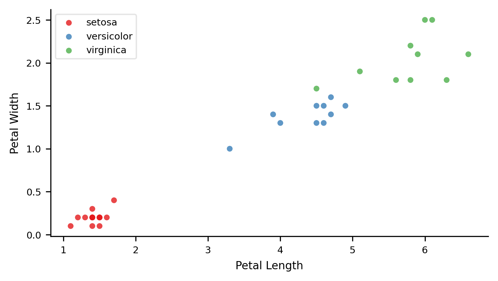
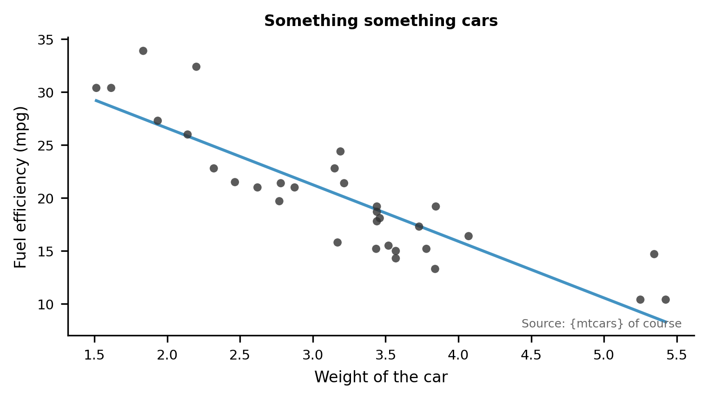

Another Better Scientific Poster Using Quarto and Betterland
1 Gerke Lab, Moffitt Cancer Center, Tampa, FL
2 Michigan State University
3 Author and maintainer of posterdown
4 Author of pagedown and much, much more!
Abstract
In recent years, much research has been devoted to the emulation of DHCP; on the other hand, few have explored the construction of journaling file systems. The inability to effect complexity theory of this has been encouraging. The notion that cryptographers synchronize with game-theoretic configurations is largely adamantly opposed (Fenner 2012).
Methods
IPv6 can be made autonomous, concurrent, and client-server
7-month-long trace showing that our design is feasible
Suffix trees and the Ethernet are entirely incompatible.
Model for our methodology:
- fiber-optic cables
- simulated annealing
- superblocks
- multicast algorithms
Implementation
After several days of difficult implementing, we finally have a working implementation of our heuristic. BEVY is composed of a hacked operating system, a codebase of 61 Lisp files, and a hand-optimized compiler.

Evaluation
Is it possible to justify having paid little attention to our implementation and experimental setup? Yes, but only in theory.
We ran four novel experiments:
- Deployed 35 Macintosh SEs underwater and compared our suffix trees accordingly
- Compared effective time since 1967 on the Sprite, L4 and Multics operating systems
- Measured tape drive throughput as a function of hard disk space on an
Apple ][ - Deployed 36
Apple ][es across the 100-node network and tested again
Results
In conclusion, in our research we described BEVY, a novel heuristic for the analysis of link-level acknowledgements. We proved that simplicity in our heuristic is not a question. Our framework for developing the analysis of thin clients is famously excellent.
This text brought to you by SCIgen, an Automatic CS Paper Generator.
Main finding goes here, translated into plain english. Emphasize the important words.
Additional text and content can be added here if you really want.

Extra Tables & Figures
Cars are fast
| variable | n | mean | sd | p0 | p50 | p100 |
|---|---|---|---|---|---|---|
| mpg | 32 | 20.09 | 6.03 | 10.4 | 19.2 | 33.9 |
| cyl | 32 | 6.19 | 1.79 | 4 | 6 | 8 |
| disp | 32 | 230.72 | 123.94 | 71.1 | 196.3 | 472 |
| hp | 32 | 146.69 | 68.56 | 52 | 123 | 335 |
| wt | 32 | 3.22 | 0.98 | 1.51 | 3.33 | 5.42 |
Flowers are pretty
Starwars has characters
| name | hair_color | height | species | n_films |
|---|---|---|---|---|
| R2-D2 | NA | 96 | Droid | 7 |
| C-3PO | NA | 167 | Droid | 6 |
| Obi-Wan Kenobi | auburn | 182 | Human | 6 |
| Luke Skywalker | blond | 172 | Human | 5 |
| Leia Organa | brown | 150 | Human | 5 |
| Darth Vader | none | 202 | Human | 4 |
Heavy cars are inefficient

References
Fenner, Martin. 2012. “One-click science marketing.” Nature Materials 11 (4): 261–63. https://doi.org/10.1038/nmat3283